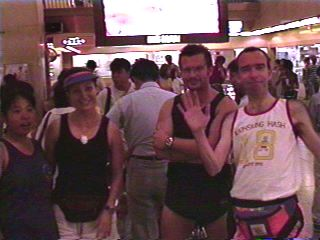
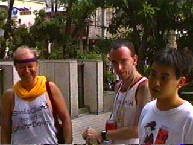
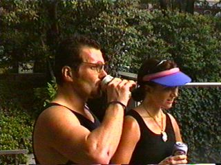
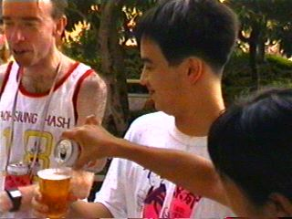
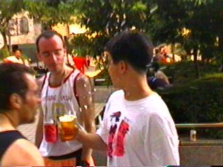
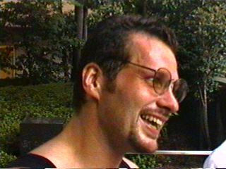
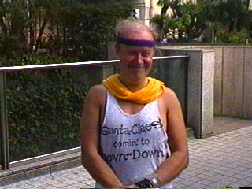
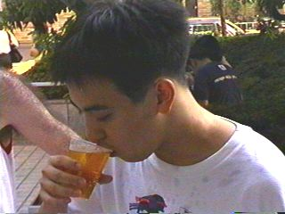

Run #59 - Sunday August 17th at Umeda.
"Wanda's Wanda-ful run"
Hare: Wanda.

Wanda (on the left) poses at the start (Umeda Bigman) with new boot Jill,
new KFMH3 hound Phuckwit (ex-Cyprus H3) and grand old man of the hash Slimie Limie.

Preparing for the circle after a hash well done. The usual venue, in front of the
'Ings' building, served us well yet again. The dating couples goggled and all was
in the best traditions (read:
noisy)
of the hash.

First timers on the KFMH3 Phuckwit and Jill rehydrate.

Ulysses looks ready to 'enjoy' his non-runner Down-Down. The pack discovered
later he hadn't run because he was sick... 'S'all right, 'twas medicinal
beer, honest!

Phuckwit sings lustily while Honour-horrible Religion for the day
Slimie Limie forgets the words so hums along instead. Ulysses looks on in
amazement. "Can I drink yet?"

Close-up of Phuckwit, a former Cyprus H3 runner and (wait for it) one of the
hares at Interhash '96 held there. Recently come to join us in Kansai to show
us how things are done on other islands.

Another first-timer on the KFMH3. An as yet unnamed Finlander
who would like to be named 'Santa Claus', as he claims Santa is the only
international celebrity from his country. Note the home-made T-shirt, which
reads "Santa-Claes comin' to DOWN-DOWN". This lad has done his homework.

Ulysses finally gets his Down-Down.
C B
B
Web site (occasionally) maintained by Slimie Limie.
This page last interfered with on 1st January 2010
©
1998–2010 Chisaii Neko Productions